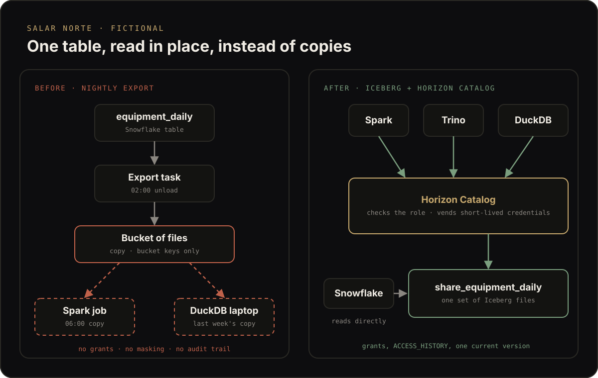
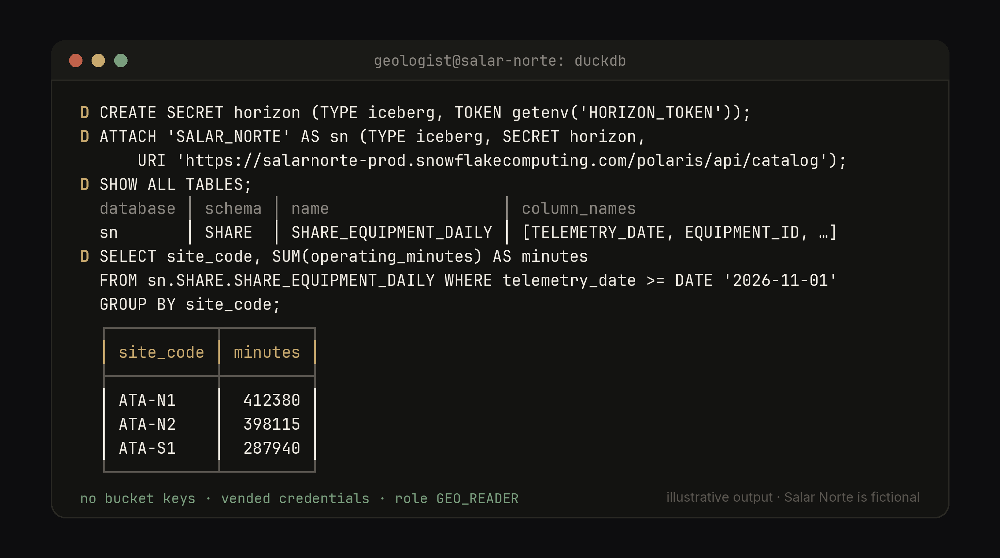
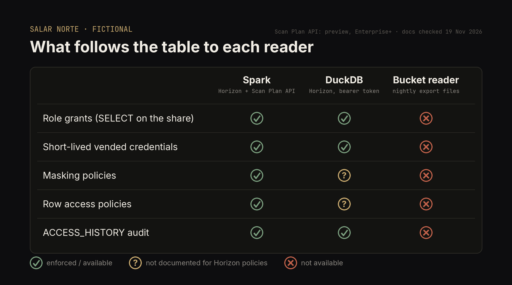

Every Snowflake account already runs an Apache Iceberg REST catalog. Nobody had to switch it on, yet plenty of teams still run a nightly job that copies a table to S3 so a Spark cluster or a laptop running DuckDB can read it.
That copy lives outside every grant, masking policy and audit log you built in Snowflake. It is also wrong from the moment the source table changes.
- Exported files drift, and your grants never travel with them.
- Snowflake now lets other engines read the original table in place.
- Policy enforcement has gaps, and they depend on the engine.
Salar Norte is fictional: a lithium producer in Chile's Atacama whose analytics team shares daily equipment telemetry with a partner's Spark team and a geologist who lives in DuckDB. The SQL and config below follow the Snowflake, dbt and DuckDB docs as I read them on 19 November 2026. I haven't run them against a live account, so try them in a sandbox first.
The export is the problem, not the file format
A nightly export is a photocopy of a ledger for every auditor who asks. Each copy is accurate for about an hour. After that, nobody knows which one is current, and copies don't check who reads them.
At Salar Norte, a task unloads equipment_daily to a bucket at 02:00 and the partner's Spark job reads it at 06:00. When the analytics team fixes a unit bug at 10:00, every reader keeps yesterday's numbers, and the only access control is whoever holds the bucket keys.
The alternative is a reading room: one ledger, a librarian checking badges at the door. In Snowflake terms, the ledger is a Snowflake-managed Iceberg table, and the librarian is Horizon Catalog.

What Snowflake gives you now
Iceberg is an open table format: a folder of Parquet files plus metadata that says which files make up the current version, like a book's table of contents. A REST catalog is the front desk that hands out the latest contents page over HTTP.
Horizon Catalog exposes that Iceberg REST API on every account:
https://<org>-<account>.snowflakecomputing.com/polaris/api/catalog
The Snowflake docs list Spark, Trino, Flink, Dremio, PyIceberg and DuckDB among the engines that can read through it. Reads and writes are both generally available.
The catch is one word: Snowflake-managed Iceberg tables. Native Snowflake tables are not exposed, and neither are Snowflake-managed Iceberg tables you filled by running COPY INTO on Parquet files. So you don't share fct_equipment_telemetry. You build a purpose-made share table in Iceberg format.
If you use dbt, that's one config line. On dbt 2.0, table_format = 'iceberg' without an external_volume creates the table on Snowflake-managed storage, so you don't have to configure a bucket:
-- models/share/share_equipment_daily.sql
{{
config(
materialized = 'table'
, table_format = 'iceberg'
)
}}
SELECT
telemetry_date
, equipment_id
, site_code
, AVG(engine_temp_c) AS avg_engine_temp_c
, SUM(operating_minutes) AS operating_minutes
FROM {{ ref('fct_equipment_telemetry') }}
GROUP BY
telemetry_date
, equipment_id
, site_code
That model already does one governance job: it holds only daily aggregates, with no operator IDs or raw sensor rows. Put share models in their own schema, one per audience, so there's one place to grant from.
Scope access with a role, not a bucket key
The badge check is ordinary Snowflake access control. The external engine authenticates as a Snowflake user with a role and sees exactly what that role can SELECT.
CREATE ROLE geo_reader;
GRANT USAGE ON DATABASE salar_norte TO ROLE geo_reader;
GRANT USAGE ON SCHEMA salar_norte.share TO ROLE geo_reader;
GRANT SELECT ON TABLE salar_norte.share.share_equipment_daily TO ROLE geo_reader;
CREATE USER geo_duckdb_svc TYPE = SERVICE DEFAULT_ROLE = geo_reader;
GRANT ROLE geo_reader TO USER geo_duckdb_svc;
ALTER USER geo_duckdb_svc ADD PAT geo_duckdb_pat
DAYS_TO_EXPIRY = 7
ROLE_RESTRICTION = 'GEO_READER';
A programmatic access token (PAT) is a password-like secret tied to one user and one role, expiring here in a week. Swap it for a short-lived access token:
curl -s -X POST "https://salarnorte-prod.snowflakecomputing.com/polaris/api/catalog/v1/oauth/tokens" \
--data-urlencode 'grant_type=client_credentials' \
--data-urlencode 'scope=session:role:GEO_READER' \
--data-urlencode "client_secret=${GEO_PAT}"
By default, a service user can only generate or use a PAT if a network policy applies to it. Horizon Catalog doesn't support network policies set at the user level. Put the service user under an account-level network policy, or relax the requirement with an authentication policy, and decide which on purpose.
The geologist passes that token to DuckDB through its generic bearer-token option, which doesn't refresh, so she reruns the curl when it expires. The "warehouse" you attach is your Snowflake database, in capitals if you created it without quotes:
CREATE SECRET horizon (
TYPE iceberg
, TOKEN getenv('HORIZON_TOKEN')
);
ATTACH 'SALAR_NORTE' AS sn (
TYPE iceberg
, SECRET horizon
, URI 'https://salarnorte-prod.snowflakecomputing.com/polaris/api/catalog'
);
SELECT site_code, SUM(operating_minutes) AS minutes
FROM sn.SHARE.SHARE_EQUIPMENT_DAILY
WHERE telemetry_date >= DATE '2026-11-01'
GROUP BY site_code;
DuckDB never gets bucket keys. It defaults to vended credentials: short-lived storage credentials scoped to one table, like a valet key that opens one car and soon stops working.

Where governance stops
This is the part the launch posts skim over. Grants follow the table to every engine. Masking and row access policies, bouncers who work inside Snowflake, only follow it to some.
The Snowflake Connector for Spark routes queries through Snowflake. The Scan Plan API, in preview for Enterprise Edition and above, has the catalog build a policy-filtered copy for the engine to read; it needs Iceberg SDK 1.11 or later, and the docs name Spark, Trino and PyIceberg. DuckDB has a server-side scan planning setting, but I found nothing in either project's docs confirming it works with Horizon policies.
For any engine you haven't tested end to end, share a table that contains only what that reader may see. The aggregate in share_equipment_daily is the policy: nothing to enforce, so nothing to bypass.
Even the Scan Plan API has limits. Its filtered copy is deleted after 24 hours, so longer queries can fail; only the latest snapshot is readable; and anyone with direct storage access can read around it. Tables converted from externally managed to Snowflake-managed can't be read with vended credentials at all.
Should this export become an Iceberg share?

What it costs
Per the Snowflake docs, catalog API calls cost 0.5 credits per million as Cloud Services (scheduled to start in the second half of 2026, so assume it's on). External engines reading Snowflake-managed storage are billed per request, plus normal cross-region transfer. The Scan Plan API adds serverless compute and temporary storage.
The export costs a nightly unload, storage for every copy, and hours explaining why the partner's numbers don't match yours. I'd take the API calls, and the audit trail: external reads appear in SNOWFLAKE.ACCOUNT_USAGE.ACCESS_HISTORY with event_source = 'horizon_irc'. With a bucket full of files, you couldn't answer who read what.
Try this at work: pick one export job and list who reads its output. Build the share table, grant a role, issue a seven-day PAT, and ask one reader to run SHOW ALL TABLES from their engine. Leave the export running for two weeks in parallel, then delete it.
Takeaways
- An export is a copy outside your access model — it drifts, and no grant or audit log follows it.
- Every account already has an Iceberg REST catalog — Horizon serves Snowflake-managed Iceberg tables to outside engines.
- Share a purpose-made table — native tables aren't exposed, and a narrow model is easier to grant.
- Roles replace bucket keys — a role-restricted, short-lived PAT plus vended credentials.
- Policy enforcement depends on the engine — don't assume DuckDB gets masking or row access policies.
Sources and version notes
Checked on 19 November 2026. The Scan Plan API is in preview and Horizon catalog billing was scheduled to start in the second half of 2026; check both against the current docs before you rely on them.
- External engines through Horizon Catalog: endpoint, engines, billing.
- Enforcing policies for external engines and the Scan Plan API.
- Snowflake storage for Iceberg tables and programmatic access tokens.
- dbt: Snowflake and Apache Iceberg.
- DuckDB 2.0: Iceberg extension, catalogs, options.
Which export job in your warehouse would you delete first if your readers could query the source directly?